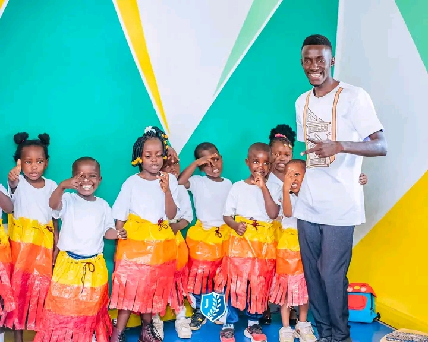
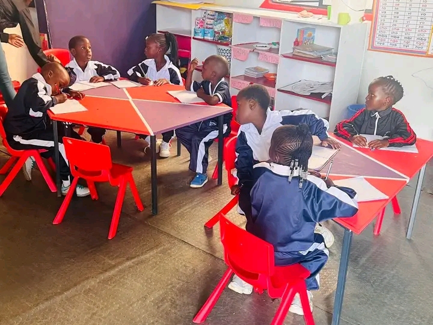
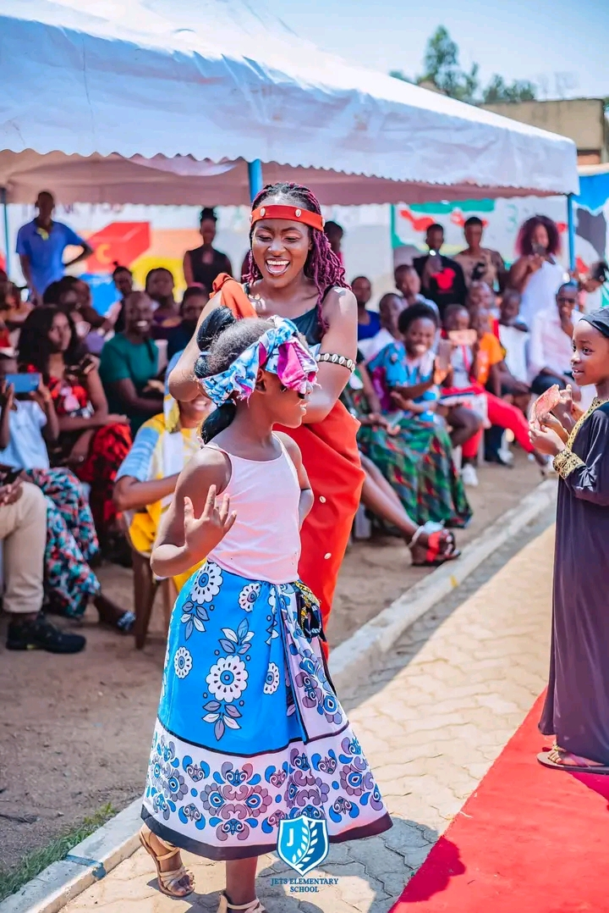
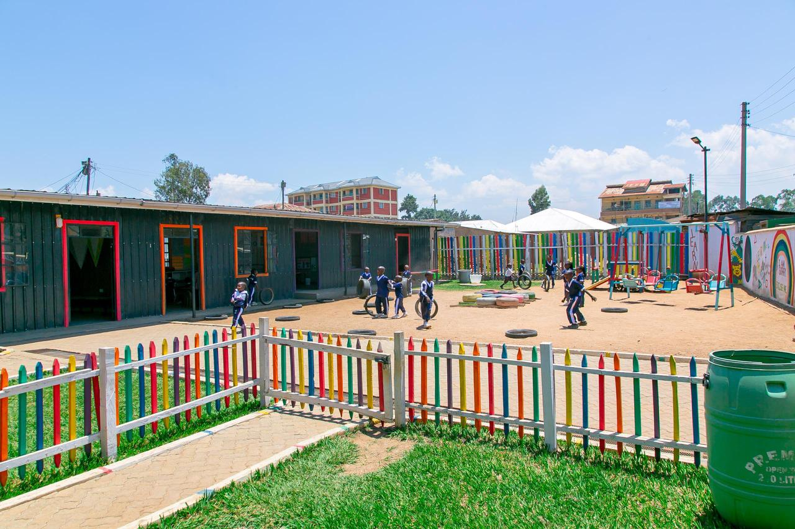

Learning Insights & Stories
School Blog & Learning Insights
Practical tips, heartfelt stories, and simple ideas to support your child's learning journey — from our classroom to your home.
Explore & Learn
Our Learning Topics
Click any article card to read the full insight. Each post connects classroom learning to real life.
Finance
Financial Literacy for Kids
Read article
Partnership
Parents & Teachers in Student Life
Read article
Careers
Better Career Paths in Student Life
Read article
Study Skills
Effective Homework & Study Strategies
Read article
Thinking
Developing Critical & Creative Thinking
Read article
Communication